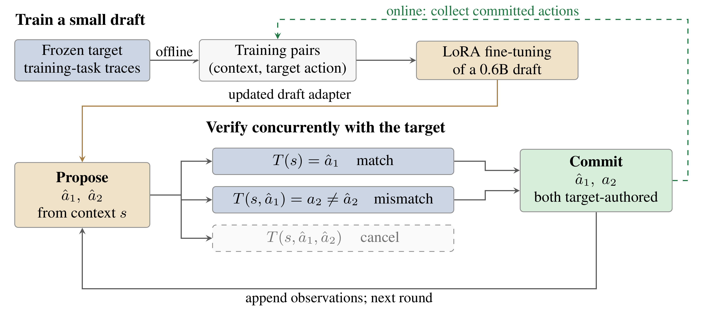

LEAP: Learning Efficient Action Proposals for LLM Agents
- 1University of Chicago
- 2Stanford University
- 3Together AI
The idea
A tiny draft. A faster agent.
LLM agents spend much of their time waiting for the next decision. LEAP teaches a small model to anticipate those decisions, so a larger target model can verify several proposed action contexts concurrently and advance through a task faster.
The draft learns directly from the target's own actions, without reproducing its reasoning. The target stays frozen and verifies every committed action. A latency framework explains when the time saved outweighs the cost of drafting, verification, and tools.

How it works
Learn. Propose. Verify.
-
Learn the target's actions
Train a lightweight LoRA adapter on context–action pairs collected from the target agent.
-
Propose the next steps
The small draft predicts a short sequence of actions without generating reasoning text.
-
Verify and move forward
The target verifies contexts concurrently. Commit the matching prefix and the target's next action, unless the task has ended.
Citation
@article{xu2026leap,
title = {{LEAP}: Learning Efficient Action Proposals for {LLM} Agents},
author = {Xu, Zhen and Zhang, Qizheng and Wan, Gerry and
Zhu, Shang and Zhang, Ce},
journal = {arXiv preprint arXiv:2610.02670},
year = {2026}
}